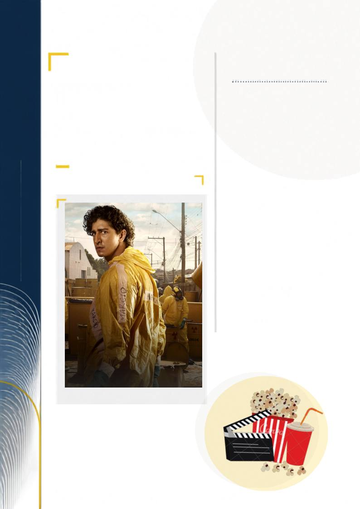

EMERGÊNCIA RADIOLÓGICA
30
DICA DE
CULTURA
☢️ SÉRIE EMERGÊNCIA
RADIOLÓGICA
Emergência Radioativa é uma
minissérie brasileira da Netflix
que reconta, de forma
emocionante e tensa, o acidente
com Césio-137 em Goiânia, em
1987. A história mostra como
uma cápsula encontrada por
catadores acabou espalhando
uma contaminação perigosa e
causando uma enorme crise. É
uma série curta, baseada em fatos
reais, que prende a atenção e
ajuda a entender uma das
maiores tragédias do Brasil. Para
alunos e profissionais, é uma
oportunidade de refletir sobre
ciência, saúde, segurança, ética,
comunicação de riscos e
responsabilidade profissional,
mostrando como informação,
preparo e decisões corretas
podem fazer diferença diante de
uma emergência.
CULTURA
CENA DA SÉRIE - CRÉDITO NETFLIX
ALÉM DA IMAGEM · CORED-SP · CRTR-SP
30
Fonte: Wikipédia (2026)